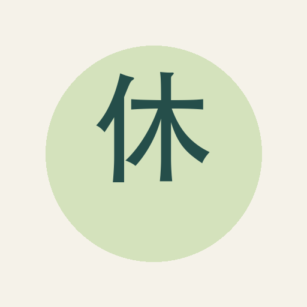
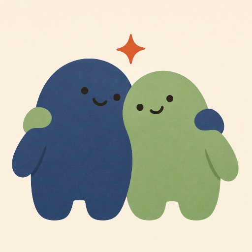
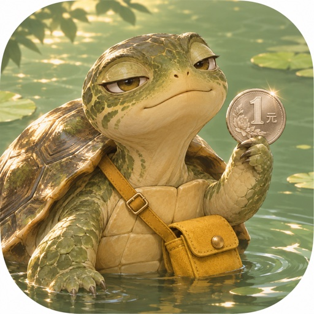

散步取景卡
出门拍什么？选六道题，从撞色、光影、形状和细节里挑个任务。
开始体验 →几道小问题，换一个看待今天的角度。
挑一个喜欢的图标，进去玩一会儿。
 今天，做点暖和的事
今天，做点暖和的事无需登录，直接打开
出门拍什么？选六道题，从撞色、光影、形状和细节里挑个任务。
开始体验 →六个小选择，找一本今晚想翻的书。
开始体验 →一直没动手的事，从哪儿开始？答六道题，找一个现在能做的小动作。
找个容易的开头六道题 · 约一分钟电脑合上后，走两步、换盏灯，还是留张纸条？答六道题，给今天收个尾。
测测今晚怎么收尾六道题 · 约一分钟热饮、阳光、热饭和暖灯。答六道题，挑几件今天想做的小事。
找点冬日灵感六道题 · 约一分钟
安静待着、出门走走，还是约个朋友？找一个合心意的休息安排。
安排一个舒服周末六道题 · 约一分钟
两人各答八道题，看看哪里合拍、哪里容易误会，生成相处说明书。
一起测测默契可同机作答或交换结果码
预算不多，愿望不少。看看哪位小神仙和你投缘，领一份生活小建议。
找找我的守护神原创娱乐小测试